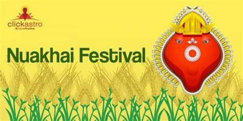

Nuakhai – The harvest festival of western Odisha
Nuakhai is the harvest festival of Western Odisha. ‘Nua’ means new, and ‘Khai’ means to eat. The occasion marks the consumption of the first harvested crops and falls on the Bhadraba Shuklapakhya Panchami tithi, which is the day following Ganesh Chaturthi. It is the most important festival in the region and is an official holiday in Odisha..
Nuakhai is celebrated primarily in Sambalpur, Bargarh, Jharsuguda, Bolangir, Sundergarh, Sonepur, Kalahandi, Nuapada, Boudh, and the Athmallik Sub-division of Angul. It is also celebrated by the Western Odisha diaspora, residing in various parts of the country and foreign lands. The day is arguably the most significant day of the year when one can see and experience the unique culture and tradition of the land, to the fullest extent.
Nuakhai is celebrated by people across socio-economic strata. The agrarian festival marks the harvest of the new rice paddy, in the land where agriculture is the primary occupation. The mountainous terrain of Western Odisha had tribals as its original inhabitants, who relied on hunting and food gathering for their sustenance. As the natives opted for a more settled way of life through farming, the festival served as a celebration that promoted the practice of agriculture.
No one is sure about when Nuakhai as an organized festival exactly began. But thanking the deity for giving us food for life has been an age-old tradition, with records tracing back to the Vedic times. The ancient sages had in fact devised the five important activities that should be followed by an agrarian society, every year. These activities together referred to as Pancha Yajna are –
Sita Yajna (tilling the land), Pravapana Yajna (sowing the seeds), Pralambana Yajna (the first crop cutting), Khala Yajna (harvesting of grains), and Prayayana Yajna (preservation of the produce). Nuakhai is believed to have been a celebration linked to the Pralambana Yajna or the first crop cutting. According to oral tradition, an organized method of celebrating Nuakhai was started by the founder of Patna state, Raja Ramai Deo in the 14th Century. The practice not only boosted the economy of the area but also brought about a feeling of brotherhood among his subjects.
The preparation for Nuakhai begins well in advance. ‘Safa-sutra’ and ‘Lipa-puchha’ or the cleaning and mopping of the households are carried out by family members. The verandah and mud walls are adorned with ‘Jhuti’ which is akin to the Rangoli design. It is different from the more common Rangoli in being white only and drawn with fingers dipped in soaked rice powder.
New clothes, usually of the traditional Sambalpuri fabric are bought for all family members. It is that day of the year when family members living in different cities and towns make it a point to return to their native place. Villages bustle with activity with friends and acquaintances getting to meet each other after one full year. The members of the extended family, if staying in separate households gather in their ancestral place. Early in the day ‘Nabanna’ or the first harvested paddy is offered to the local deity of the region. Devi Samaleswari in Sambalpur, Pataneswari in Bolangir/Patnagarh, Manikeswari in Kalahandi, Sekharbasini in Sundergarh, and Sureswari in Sonepur are offered ‘Nua’ on a predetermined time called ‘Lagna’.
Once the rituals in the temples are accomplished, the celebration now shifts to the individual households. The head of the family who is usually the eldest family member offers his prayers and performs the customary rituals. This is followed by distributing ‘Nua’ (rice grains) to every member. After thanking mother earth for providing them with food for their sustenance and the Almighty for keeping them together for yet another year, the members consume the rice. This is followed by ‘Nuakhai Juhar’ where youngsters touch the feet of the elders to seek their blessings. Friends and relatives meet and greet each other with a Nuakhai Juhar, by folding hands. People also throng the temples for the darshan of the principal deity.
The occasion sees the preparation of the two most loved delicacies of the place- Pitha and Mitha. Sweet dishes like arisa, kakra, manda , chakli, mug-bara, and kheeri are prepared. Non-vegetarian dishes especially mutton curry is cooked and taken with rice. Popular folk dance forms like dalkhai,rasarkeli,maelajada,bajnia,nachnia and chutkuchuta are performed on the foot-tapping beats of traditional musical instruments like dhol, taasaa, nisan, and the melodious Sambalpuri songs.
Several socio-cultural organizations celebrate Nuakhai on their premises. The Western Odisha diaspora in cities like Delhi, Chennai, Vadodara, Bhubaneswar, Hyderabad, Bengaluru, Mumbai, Lucknow, Pune, and even in London and Dubai have formed associations and are celebrating Nuakhai with much zeal and enthusiasm. Nuakhai is also celebrated in some parts of Chhattisgarh and Jharkhand, sometimes with slight variation in the nomenclature.
Nuakhai is a festival that promotes mutual harmony and brotherhood. As our farmers are struggling relentlessly with uncertainties like drought due to low rainfall, and diseases due to indiscriminate use of pesticides, the festival of Nuakhai celebrates their hard work and struggle. It also celebrates farming as an occupation at a time when most youngsters are abandoning agriculture to opt for less challenging options. It is that celebration which year after year reminds the residents of the ten districts of Western Odisha that they are linked by the same culture and tradition and hence are one..

Sri Lanka's spice farming heritage continues to captivate the world with its aromatic and flavorful spices, contributing to both the nation's economy and its cultural identity. These blog posts provide insights into various aspects of agriculture and farming in Sri Lanka, highlighting the challenges, opportunities, and the rich heritage that characterizes this vital sector.